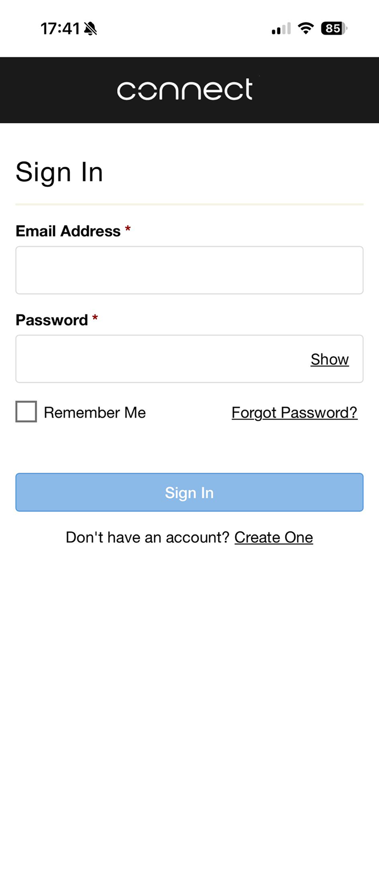
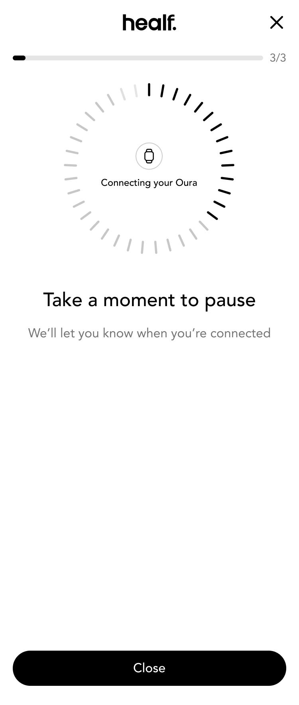
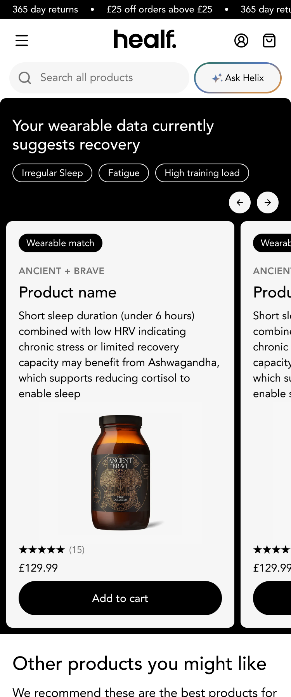
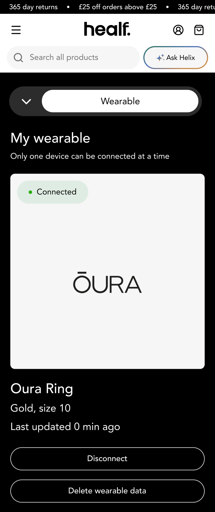
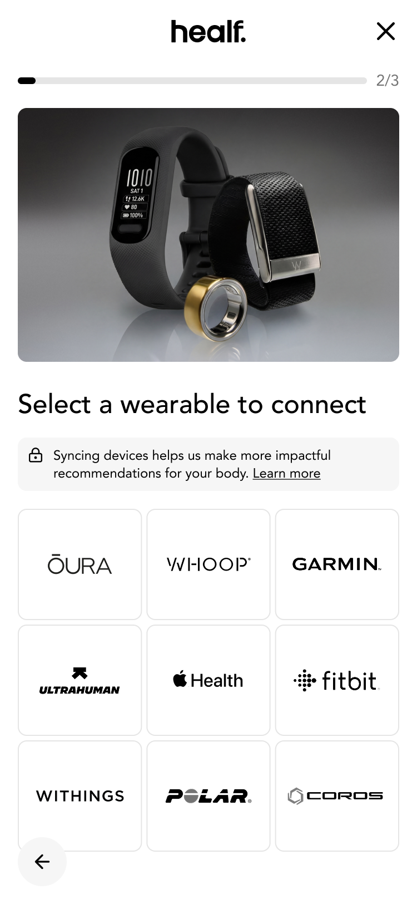
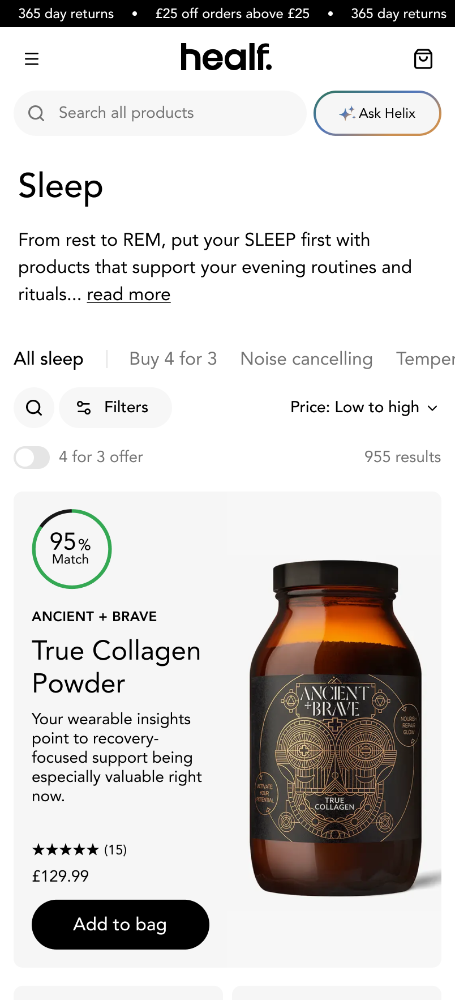
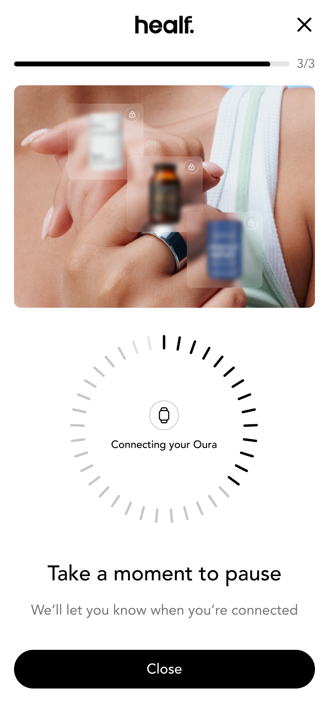

Overview
Healf's users struggled to understand which products were right for them. By introducing a "Connect Wearables" experience, we enabled more personalised recommendations, improving confidence and driving higher conversion, resulting in a 23% uplift in AOV.
My Role
Senior Product Designer · Product Manager · Engineering team
Tools
Figma · Linear · Claude Code · UX Pilot · PostHog
Key Goal
Data acquisition and AOV






Define
Healf's existing recommendation engine relied on self-reported survey data. Wearable data offered a richer, more accurate and continuous data stream. However, integrating this meaningfully required understanding users' expectations around sharing personal health data and the value they expected in return.
Methodology 01
Data audit
Mapping all existing data inputs (onboarding quiz, purchase history, browsing) against the data wearables could provide, to identify the highest-value gaps.
Methodology 02
User interviews
12 interviews with wearable owners to understand sharing attitudes, privacy concerns, and expectations around health data personalisation.
Methodology 03
Competitive analysis
Review of how wellness platforms (Whoop, Oura, Lingo) surface wearable data to inform product recommendations and daily guidance.
Key insight
Users were willing to share wearable data, but only if the value exchange was immediate, visible, and under their control.
Ideation
Problem
Users don't understand what connecting a wearable will do for them.
HMW
How might we make the value of wearable connection immediately clear during onboarding?
Problem
Users share data but never see it reflected anywhere on the site.
HMW
How might we surface wearable insights across key touchpoints so users feel their data is working for them?
Problem
Recommendations feel generic regardless of individual health patterns.
HMW
How might we use real-time health signals to dynamically personalise product recommendations?
Problem
Users fear sharing health data will be used against them or shared.
HMW
How might we give users granular control over their data while maintaining a seamless experience?
Activation banners
These concepts explored the most effective way to communicate the value of connecting a wearable.



Connection flow
Explorations into what resonated with users the most and was most identifiable to ensure a quick and frictionless flow.
Results display
Trials for showing the result with a match score, giving users a clear reason why each product was recommended for them.


Product recommendations and results
Exploration focusing on the 'For You' page carousel where users were directed after connection showing their recommended products.
On boarding pop up; select a wearable to connect
Login to healf
(If already logged in, straight to wearable login)
Login via third party Terra
Confirmation page
For you page
(Banner and product carousel)
Account
Management of devices and link to recommendations
Collection pages
Surface recommendations as browsing
PDP
(With match score/suggested better match)
Validate
While technical constraints meant the wearable match score was not yet available, we prioritised early release to start validating the flow and identify areas for improvement.
User feedback surfaced three clear problems with the results experience.
Finding 01
Value was not immediately visible
Users couldn't see why a product was recommended or how their personal data was being used.
"At a high level the recommendations seem relevant... but I would want far more detail."
Finding 02
Explanations lacked specificity
Users wanted their actual data referenced. Generic claims reduced perceived intelligence.
"It would be so cool to see things like 'you average ABC active calories...'"
Finding 03
Recommendation noise
No prioritisation and supplements already taken created friction and reduced perceived signal quality.
"I was recommended something I had tried and didn't like."
Key insight
The goal became clear: while interest was strong, the results needed to be redesigned to make the reasoning behind suggestions clearer, more personalised, and easier to trust.
Design
With the soft-launch learnings in hand, we narrowed our focus to the most critical part of the flow: how recommendations were presented back to the user. Three design interventions addressed the feedback directly.
Finding
Value not immediately visible
Solution
Specific, data-referenced recommendations via a match score
Impact
Match score gives every recommendation a visible reason to exist

Outcomes
+11%
Wearable connection rate
Of users with known compatible devices connected within the first month of launch.
+4%
Conversion Uplift
Uplift in conversion, converting visits into purchases from hyper-personalised recommendations powered by wearable data.
+23%
AOV
Increase in purchases among users with connected wearables compared to non-connected users.
Data-driven personalisation at scale
Established Healf as one of the first wellness e-commerce platforms to meaningfully integrate wearable data into the shopping experience.
Ongoing engagement loop
Created a persistent reason for users to return between purchases, with health insights updating daily and recommendations adapting in real time.




Reflection
Transparency builds trust in personalisation
Generic recommendations reduced perceived intelligence. Referencing specific user data points made recommendations feel more credible and valuable.
Early release accelerates learning
Launching a simplified version of the feature allowed us to gather real behavioural feedback sooner and iterate faster than waiting for the full experience to be complete.
Context matters as much as recommendation
Users wanted to understand why a product was relevant to their goals, not just that it was recommended.